UITK 段階0 実測（S1・S2・S3・S15）
bd moorestech-albof.1 ／ 計画 docs/uitk-migration/plan.md §4.8 ／ 実測コード: ブランチ poc/uitk-stage0-measure コミット 258d5c3c3b（master には入れない）／ 実測日 2026-10-26 ／ Unity 6000.3.8f1・Mac mini（Metal）
- S1 合格 — PanelSettings.sortingOrder だけで CEF の前にも後ろにも置ける。試した値では、1・10 なら前、-1・-10 なら後ろだった。0（CEF の Canvas と同じ値）では UITK が前に出たが、これは 1 回見ただけなので、設計では 0 を使わない。Web のインベントリを開いた状態で確認した。
- S2 Editor で合格／配布ビルドは未確認（赤信号の項目） — Unity Recorder・PlaytestScreenshot・ScreenFrameReader の 3 経路すべてに UITK と CEF が写り、前後関係も画面どおりだった（画像を目で見て判定）。経路(3)は ScreenFrameReader を直接呼んで撮っており、バグ報告の本物の経路（GameFrameRecorder でエンコードした動画）は通していない。Mac の配布ビルド相当は 1 回焼いたが、ディスクが満杯で出力が壊れていて起動しなかった。
- S3 合格 — QueueStateEvent で注入したクリックが、InputSystemUIInputModule を通って UITK のボタンに届く（pointerdown 1 回・click 1 回）。UITK が受け取ったイベントのパネル座標は、画面座標から換算した値と一致した（1 点・倍率 1.5 で確認。パネル→画面の向きは独立には確かめていない）。IsPointerOverGameObject も UITK を拾う。カーソルがロックされている間（通常のゲーム画面）は届かないが、これは今の Web の画面と同じで、期待どおりの挙動。
- S15 不合格（受入の半分） —
* { pointer-events: none !important }にすると、当たり判定のある要素が 0 になり、クリックしても action は 0 件だった（確かめたのは左クリック 1 回だけ。キー・ホイール・ドラッグは試していない）。html要素だけを none にする方式では 32 要素が当たったままで、クリックすると action が 1 件出た。どちらの方式でも、CEF 経由の pointerOverUi は切替時の値（true）のまま固まった。原因は、切替の後に Web へ pointermove が届かなくなることだと推測している（Web 側で回数は数えていない）。
判定の一覧
| 項目 | 判定 | 証拠（数値・ログ） |
|---|---|---|
| S1 前後 | 合格 | CEF の Canvas は Overlay・order 0。front=10/back=-10、front=-1、front=0、back=1、front=1/back=-1 の 5 組を、インベントリ表示中（UIState=PlayerInventory）に撮影（F1392〜F1664） |
| S2 (1) Recorder | 写る | recording.mp4 の 23.5 秒のフレームに、パネルの前後と F 番号の透かしが写る |
| S2 (2) PlaytestScreenshot | 写る | 各組の *_screencapture_F*.png |
| S2 (3) ScreenFrameReader | Editor で写る | *_framereader_F*.png（画像を目で見て判定。シナリオの Assert は撮影が終わったかしか見ていない）。Editor では 1280x720 の左上に Game ビューのウィンドウ全体が入り、残りが白くなる。CEF も同じ写り方なので UITK とは無関係の Editor の癖だと推測している（プローブ無しの対照は撮っていない） |
| S2 (3) 配布ビルド | 未確認 | ビルドが壊れていたため起動できず（No GlobalGameManagers file was found ... quitting player!）。ディスク満杯で再ビルドもしていない |
| S3 注入→UITK | 合格 | ロック解除中（パネル座標は eventPanel が UITK の実イベントの値）: screen=(1143,399) screenToPanel=(1714.5,481.5) eventPanel=(1714.5,481.5) downs=1 clicks=1、IsPointerOverGameObject=True |
| S3 ロック中 | 届かない（期待どおり） | lock=Locked eventPanel=none downs=0 clicks=0 IsPointerOverGameObject=False |
| S15 action | 0 件（!important 版・左クリックのみ） | all-none-important: elementsStillHittable=0、click 後の action 0 件。root-none: elementsStillHittable=32、hotbar.select が 1 件出た |
| S15 pointerOverUi | false にならない | 切替後、何も無いワールドへポインタを動かしても webPointerOverUi=True（F1567・F1754）。restore の後に動かすと False に戻る（F1662・F1847） |
S1: UITK パネルと CEF の前後
プローブは 2 枚のパネル。前用のパネル（マゼンタの板とオレンジの「S3 PROBE」ボタン）と、後ろ用のパネル（シアンの帯と左の板）。どちらにも F{frame} t={秒} の透かしを描いている。Tab で Web のインベントリを開き、sortingOrder の組を変えながら撮った。板の上の UITK FRONT so=10／UITK BACK so=-10 という文字は生成時に書いたまま更新していない。その時点の値は、左上の透かし（FRONT so=…／BACK so=…）のほうを見てほしい。
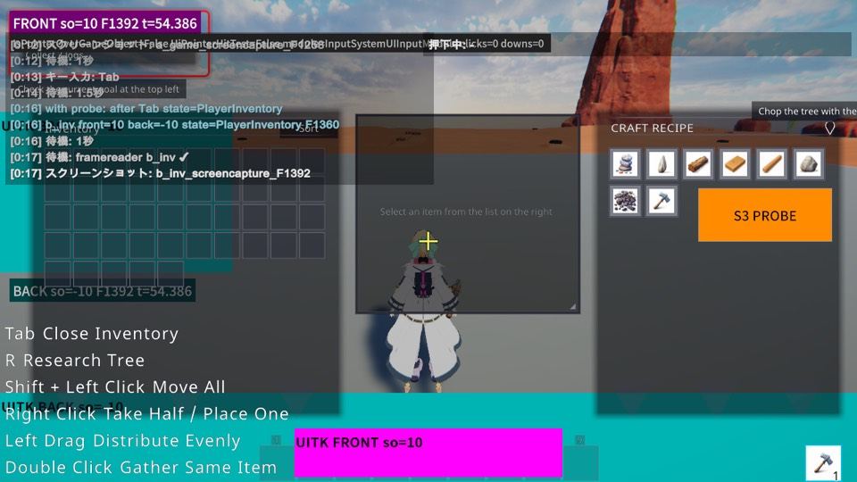
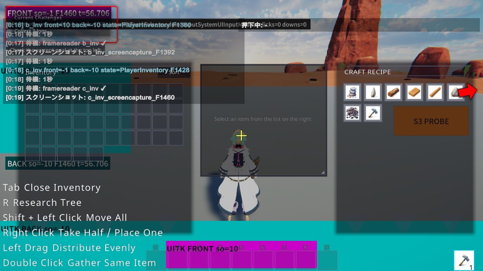
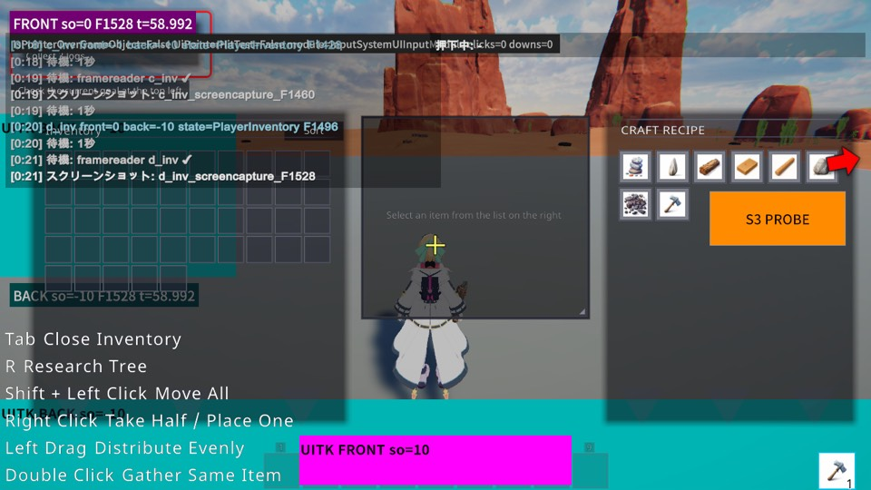
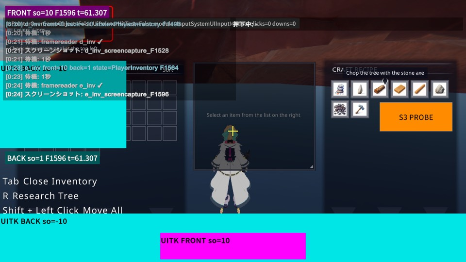
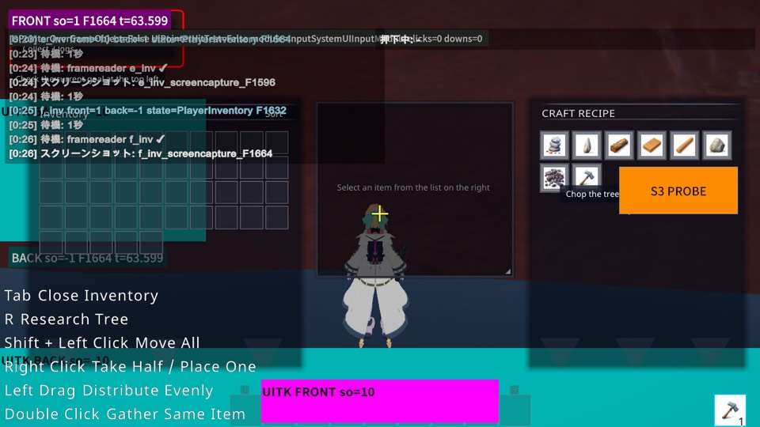
指揮セッションからの確認: Tab が効かなかった件と、HUD だけで判定していた件
1 回目の撮影（run 20261026_005744）では Tab の後もインベントリが開かず、b_inv〜f_inv はワールドと HUD だけで撮れていた。HUD のホットバーで前後は読めていたものの、全画面の Web パネルでは確かめていなかったので、撮り直した。
- UITK のフォーカスが Tab を食っていたのではない。撮り直しでは、プローブを出す前の対照で
before Tab state=GameScreen → after Tab state=PlayerInventory、プローブを出した後もwith probe: after Tab state=PlayerInventoryになった（run20261026_040840）。プローブのボタンはfocusable=falseで、Editor での実測では IME 画面を出していない。 - 原因（推測）: Editor が前面にいない間、Input System がデバイスを無効にしていた。同じ時間帯の S3 の前の診断で
focused=False bg=ResetAndDisableNonBackgroundDevices kb=False mouse=False mousePos=(0.00, 0.00)を観測している（Console から転記した行をevidence/log-excerpts.txtに置いた）。シナリオの実行中だけ IgnoreFocus／AllDeviceInputAlwaysGoesToGameView に切り替え、終わったら元に戻すようにしてから、注入が届くようになった。1 回目の実行そのものではデバイスの状態を記録していないので、推測と書いておく。
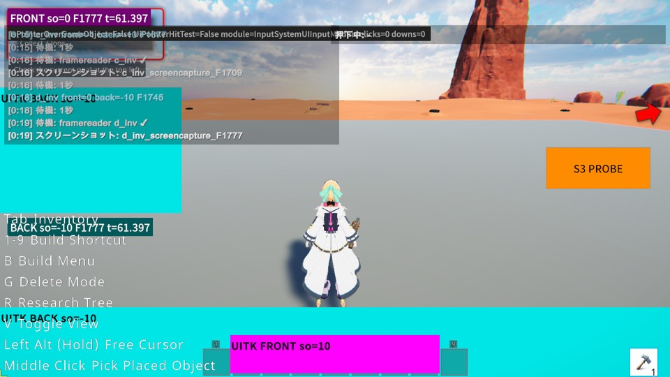
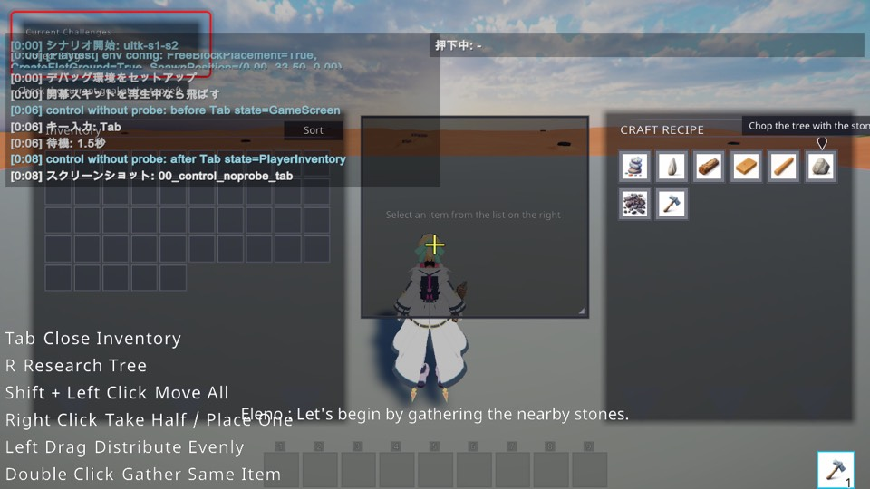
S2: 録画・スクショ・バグ報告動画への写り込み
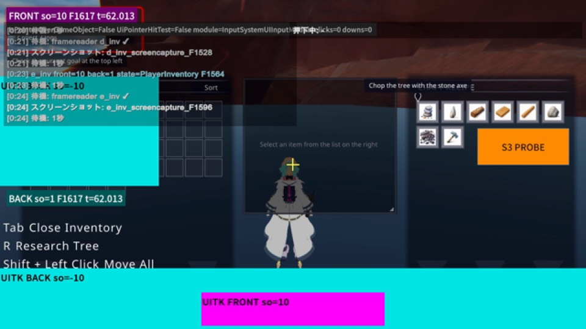
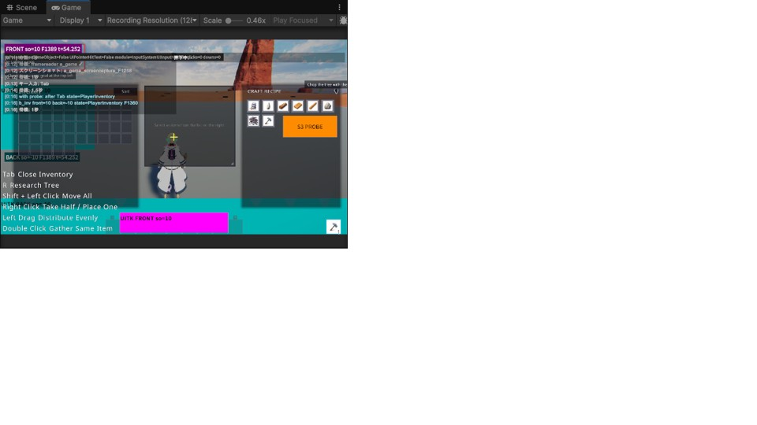
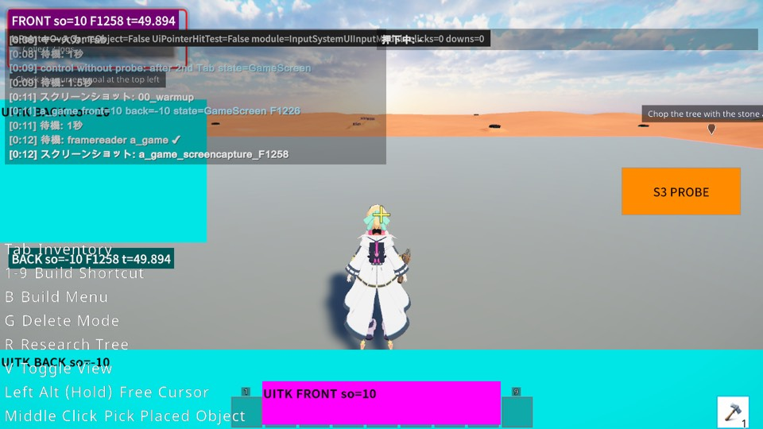
配布ビルド相当（Mac）での経路(3): 未確認
ローカルで PlayerBuildRequest.ForLocalDevelopment(StandaloneOSX) を焼いた（Addressables のクリーンビルドを含めて 28 分）。Unity は Build Result :Succeeded（TotalSize 3211595421。Console の行を evidence/log-excerpts.txt に転記した）を返したものの、ディスクの空きが約 100MB しかなく、Contents/Resources/Data には data.unity3d.tmp（29MB）だけが残っていた。起動すると No GlobalGameManagers file was found ... quitting player! で即終了する。ビルドが壊れていても成功として通ってしまうこの問題は、bd moorestech-albof.1.1 に積んだ。再ビルドにはおよそ 4.5GB 要る。同じボリュームで常駐している本番サービスの書き込みを止めないため、空きが 2GB を切っている今は焼いていない。
焼き直す手順（空きが 10GB 以上あるとき）: poc/uitk-stage0-measure の Editor で Client.Editor.Build.UitkStage0PocBuildCli.BuildWithoutExit(BuildTarget.StandaloneOSX, "<出力先>") を呼ぶ。起動は moorestech.app/Contents/MacOS/moorestech --uitkWithCef --uitkProbeAutoCapture --uitkAutoStartLocal。タイトルの「ローカルで開始」を自動で押し、40 秒後に 3 組を撮って persistentDataPath/UitkStage0/<日時>/ へ *_framereader_F*.png を書く。
S3: 入力注入 → UITK
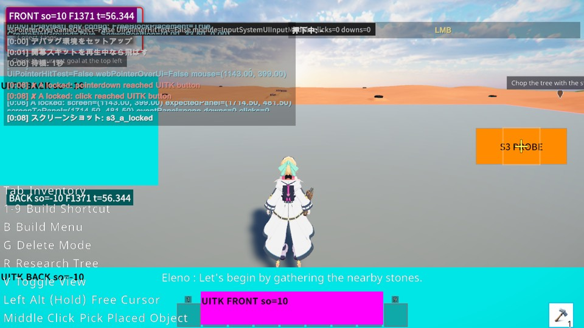
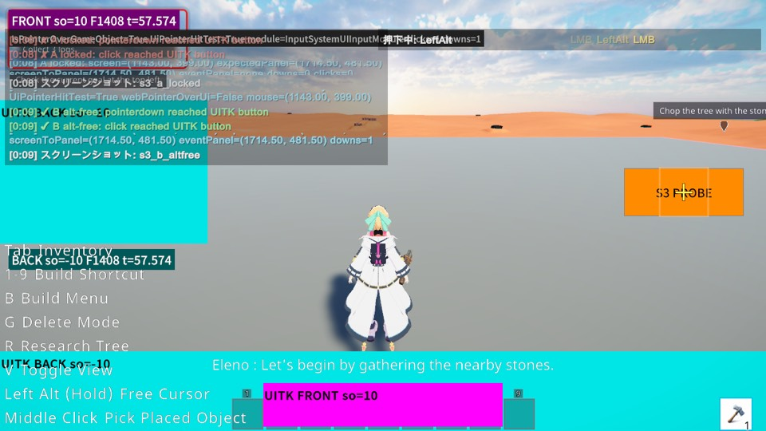
- EventSystem.IsPointerOverGameObject はボタン（picking=Position）の上で True、picking=Ignore の板の上で False。ゲーム側の UiPointerHitTest は、板の下にある Web のホットバーを拾って True になった（
webPointerOverUi=True）。 - UITK の画面で操作するには、今の Web の画面と同じく、カーソルを解放する状態遷移が要る。
S15: 委譲中の Web の入力停止
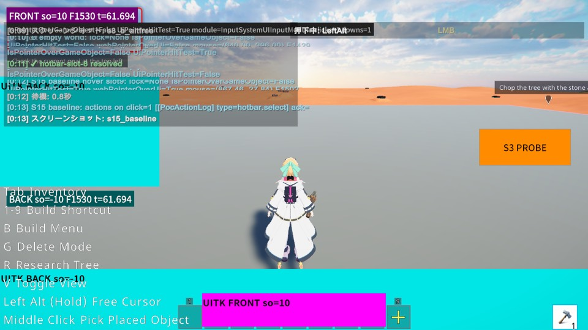
hotbar.select が 1 件出る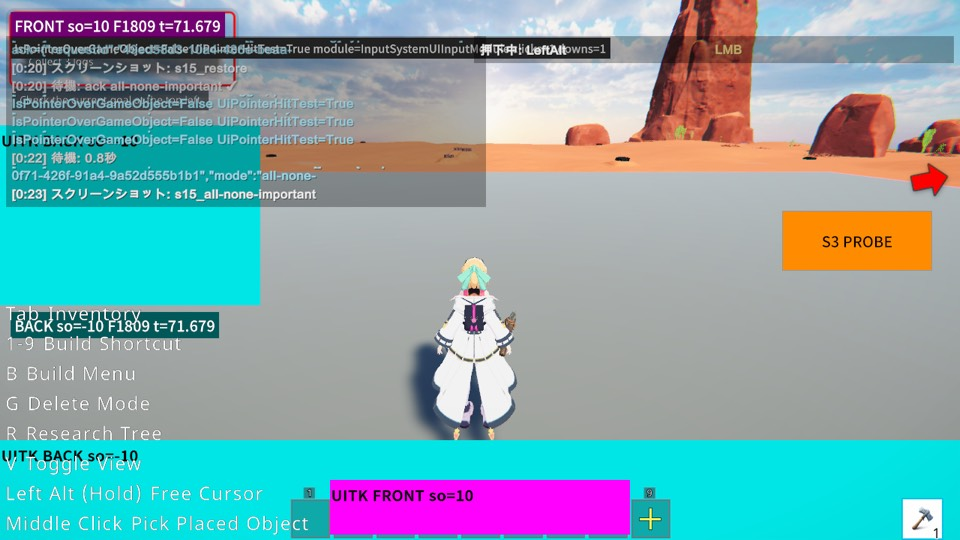
UiPointerHitTest=True のまま（webPointerOverUi が固まる）| 方式 | 当たる要素 | クリック時の action | 何も無い所へ動かした後の webPointerOverUi |
|---|---|---|---|
| baseline | — | 1（hotbar.select） | False |
html { pointer-events:none } | 32 | 1（hotbar.select） | True |
* { pointer-events:none !important } | 0 | 0 | True |
| restore | 106 | 1 | False（動かした時点で戻る） |
action の数は Unity 側の WebSocketMessageDispatcher で受けた action を数えている（ack と dom_query は除く。PoC 用のログ [PocActionLog]）。html だけを none にしても、子要素の pointer-events: auto が上書きして当たったままになる。pointer-events はキー入力を止めないので、キー処理は別に止める必要がある（計画 R1 のとおり）。
ユーザーに見てほしい判断（ユーザー未裁定）
- S15 の受入をどう満たすか。agent の推奨: 委譲中は Unity 側が Web の pointerOverUi を読まない（委譲状態を持つ Unity 側の 1 か所で無視する）。Web には
* {pointer-events:none !important}を当て、キー処理は別に止める。- これは計画からの逸脱になる。R1・§3.8 では共存中は両系の論理和を取るとしており、§4.8 の失敗時の手は「委譲中は Web の HUD も描かない」である。
- 委譲が終わった直後も、次に pointermove が来るまで古い値（true）が残る（実測の restore でも、ポインタを動かすまで true だった）。ポーズを抜けた直後の最初のワールドクリックが 1 回止まるおそれがある（推測）。この対策（委譲の終了時に Web の値を捨てる）まで含めて推奨とする。
- Web から「委譲に入ったら false を送る」方式は、Web の描画タイミングに依存するので採らない。§4.8 の代替案は HUD が消えるので、最後の手段に残す。
- S2 の配布ビルド経路が未確認のまま、段階 1 に入ってよいか。選択肢:
- A（推奨）: 入らない。ディスクの空きを 10GB 作ってもらい、Mac の配布ビルド相当を焼き直して経路(3)を確かめる。同じビルドで S9 用の PoC にもなる。帰結: 段階 1 の開始が、空きの確保とビルド 30 分ほどの分だけ遅れる。
- B: Editor の結果で S2 を合格とみなし、段階 1 に入る。帰結: 配布ビルドで写らなかった場合、テスターのバグ報告動画から UITK が欠けたまま段階 1 が進む（計画 §6 #2 の赤信号を外すことになる）。
事実として段階 1 の担当へ渡すこと: sortingOrder を負にするだけで、パネルを CEF の後ろに置ける（追加の仕組みは要らない）。通知層を背面パネルに置くかどうかは、計画どおり段階 1 で決める。
S9（IME）用の PoC ビルド
置けていない。Mac・Windows とも、ディスクの空き（2GB 未満）が 1 本分の出力（約 4.5GB）に足りない。Windows 検証機には Unity も repo も置かない運用なので、mac-mini で焼くしかない。焼く口は実験ブランチに入っている。
- Mac: Editor の uloop から
UitkStage0PocBuildCli.BuildWithoutExit(BuildTarget.StandaloneOSX, dir)。または batchmode で-executeMethod Client.Editor.Build.UitkStage0PocBuildCli.MacLocalRelease（出力先は環境変数UITK_POC_BUILD_OUTPUT） - Windows: batchmode で
-buildTarget StandaloneWindows64 -executeMethod Client.Editor.Build.UitkStage0PocBuildCli.WindowsLocalRelease（同じ環境変数） - 起動引数を付けなければ CEF を初期化しない。
--uitkWithCefで CEF ありの比較になる。ゲーム画面で単行と複数行の TextField、IME の状態（imeCompositionMode・変換中文字列・フォーカス）、イベントのログが出る。F8 で表示を切り替える。手順は bdmoorestech-albof.8に書いた。
実測中の環境の障害
- dev-server-reaper が実測中の Editor を落とした。
~/.local/bin/uloopが素のバイナリで上書きされ、所有 receipt を書くラッパーを経由しなくなっていたため。ラッパーの symlink を戻して復旧した。 - 別の worktree で CEF のサーバーが動いている間、こちらの CEF が code -6 で初期化に失敗し、Web が白紙になった（同時に動かしたことが原因だというのは推測）。撮り直しは、他に CEF が動いていないことを確かめてから行った。
- ディスク満杯。Addressables のビルドが SBP の書き込み失敗で落ちた（BuildCache を消して再実行）。その後、プレイヤーが壊れたまま Succeeded になった（上記）。
証拠ファイル
evidence/ に、各実行の result.json（Timeline に数値の行がある）と、Console から転記した行（log-excerpts.txt）、壊れたビルドの Player.log とディレクトリ一覧を置いた。
再現
git checkout poc/uitk-stage0-measure # 258d5c3c3b # Editor（PlayMode）。プレイテスト DSL の run-scenario.sh で実行する poc-scenarios/uitk-stage0/s1-s2-layer-capture.cs # S1・S2 poc-scenarios/uitk-stage0/s3-s15-input.cs # S3・S15 # プローブ: moorestech_client/Assets/Scripts/Client.UitkStage0Probe/ # S15 の Web 側: moorestech_web/webui/src/bridge/playtest/pocPointerEventsProbe.ts